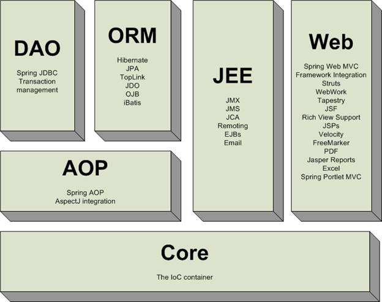
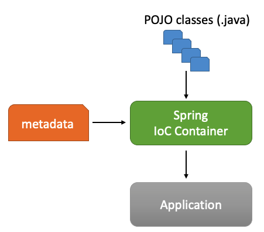

Framework Spring
... et si on commençait par le principe?
IUT de Vannes Licence Professionnelle Developpement de Logiciels Innovants et Securises (S2IMA)
Gustavo BOBEFF - 2023
Structure du Spring Framework
- Core Container : ensemble de modules de base qui constitue la partie fondamentale du framework, notamment l’implémentation pour mettre en place l’inversion de contrôle (IoC - Inversion of Control) et l’injection de dépendances (Dependency Injection) parmi d’autres.
- AOP : fournie les fonctionnalités basées sur les spécifications AOP (Aspect-Oriented Programming).
- Aspects : intégration avec AspectJ (Extension AO pour Java).
- Instrumentation : fonctionnalités permettant de manipuler des byte-codes des classes Java compilées.
- Messaging : fournie les fonctionnalités permettant l’implémentation des applications basées sur l’envoi de messages.
- Data Access/Integration : modules pour la gestion transactionnelle de données.
- Web : ensemble de modules pour l’implémentation des applications Web.
- Test : modules pour la mise en place de tests unitaires et d’intégration des applications s’appuyant sur Spring.
Inversion of Control (IoC)
- IoC est une façon de concevoir l’architecture d’une application en se basant sur le mécanisme de l’injection de dépendance.
- liée étroitement au principe d’inversion de dépendance qui est un des cinq principes fondamentaux de la conception objet résumés par l’acronyme SOLID (Robert C. Martin).
- S : Responsabilité unique (Single responsibility principle)
- O : Ouvert/fermé (Open/closed principle)
- L : Substitution de Liskov (Liskov substitution principle)
- I : Ségrégation des interfaces (Interface segregation principle)
- D : Inversion des dépendances (Dependency inversion principle)
- L’injection de dépendance est un mécanisme simple à mettre en œuvre dans le cadre de la programmation objet et qui permet de diminuer le couplage entre deux ou plusieurs objets.
- principe d’Hollywood : "... ne nous appelez pas, nous vous rappellerons ..."
Inversion of Control (IoC) - comment ça marche ?
|
 |
Inversion of Control (IoC) - metadata = "glue code"
- contient la :
- création des objets métier
- gestion du cycle de vie des objets métier
- définition des dépendances
- plusieurs supports possibles :
- fichier xml
- fichier java
- annotations du code
Inversion of Control (IoC) - Exemples
IoC - Exemples (prérequis)
- IDE
- Compte GitHub
- Distribution Spring Framework (6.0.x)
- Code source
- metadata xml : https://github.com/GISMAR-S-A-R-L/LP_DLIS_SpringFramework_Exemples
- metadata xml (maven) : https://github.com/GISMAR-S-A-R-L/LP_DLIS_SpringFramework_Exemple_Maven
IoC - Exemples : attributs de metadata (xml)
| Attribut | Description |
|---|---|
| class | Obligatoire. Classe à instancier. |
| name | Identifiant de la définition du bean. |
| scope | Le « scope » de l’objet crée par le bean. |
| constructor-arg | Utilisé pour l’injection de dépendances. |
| properties | Utilisé pour l’injection de dépendances. |
| autowire | Utilisé pour l’injection de dépendances. |
| lazy-init | Permet de déterminer le moment de la création de l’objet: à la mise en place de la configuration (lecture du fichier XML) ou la première utilisation. |
| init-method | Méthode de l’objet appelée juste après l’affection des toutes les valeur des propriétés de l’objet. |
| destroy-method | Méthode appelée quand le container est « détruit ». |
IoC - Exemples 01 (metadata xml)
- Instanciation d'un objet simple (bean)
- Configuration (metadata) disponibles dans le fichier XML application_context_01.xml
IoC - Exemples 02 (metadata xml)
- Instanciation de deux objets (bean) avec composition (ref)
- Configuration (metadata) disponibles dans le fichier XML application_context_02.xml
IoC - Exemples 03 (metadata xml)
- Instanciation d'un objet simple (bean) par le constructeur.
- Configuration (metadata) disponibles dans le fichier XML application_context_03.xml
IoC - Exemples 04 (metadata xml)
- Instanciation d'un objet simple (bean) par le constructeur :
- scope=prototype : les instances créées sont complètement indépendantes
- scope=singleton : bien qu'appelé plusieurs fois une seule instance est finalement créée par le conteneur
- Configuration (metadata) disponibles dans le fichier XML application_context_04.xml
IoC - Exemples 05 (metadata xml & annotations)
- Instanciation des objets annotés (@Component) avec composition (@Autowired).
- Configuration (metadata) disponibles dans le fichier XML application_context_05.xml
- Cette solution utilise, en plus des librairies des exemples précédents, la librairie spring-aop-x.y.z.jar.
IoC - Exemples 06 (metadata xml & annotations)
- Instanciation des objets annotés (@Component) avec composition (@Autowired).
- Configuration (metadata) disponibles dans le fichier .java VoitureConfiguration.java (@Configuration)
- @Configuration indique que la classe peut être utilisée par le conteneur IoC entant que source de définition des bean.
- Une méthode annotée avec @Bean indique que l’objet retourné doit être enregistré en tant que bean dans le contexte de l’application.
IoC - Exemple Maven (metadata xml & annotations)
- Instanciation des objets annotés (@Component) avec composition (@Autowired).
- Configuration (metadata) disponibles dans le fichier .java VoitureConfiguration.java (@Configuration)
IoC - Types de configuration (résumé)
- XML : méthode « classique », très souple et très puissante
- Essentielle à connaître
- Convient très bien à la configuration dite « d’infrastructure »
- Annotations : depuis Spring 2.5
- Plus rapide à utiliser
- Plus simple : ne convient qu’à de la configuration « métier »
- Java : depuis Spring 3.0
- Permet de coder en Java quelque chose de similaire à la configuration XML
- Plus puissant (c’est du code, on peut faire ce qu’on veut)
- Moins simple à modifier, en particulier pour de la configuration « d’infrastructure »